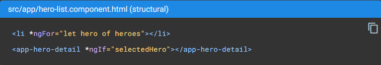
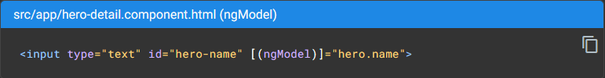

<main class="directives-main py-4">
    <div class="directives-container">
        <h2>Directives</h2>
        <hr style="border-color: rgb(117, 117, 117);">
        <div class="d-flex justify-content-center align-items-center">
            
        </div>
        <p>
            Os templates (modelos) do Angular são dinâmicos. Quando o Angular os renderiza, ele transforma o DOM de acordo com as instruções fornecidas pelas diretivas. Uma diretiva é uma classe com um decorador <code>@Directive()</code>.
        </p>
        <p>
            Um componente é tecnicamente uma diretiva. No entanto, os componentes são tão distintos e centrais para os aplicativos Angular que ele define o decorador <code>@Component()</code>, que estende o decorador <code>@Directive()</code> com recursos orientados a modelos.
        </p>
        <p>
            Além dos componentes, existem dois outros tipos de diretivas: estruturais e de atributos. O Angular define várias diretivas de ambos os tipos e você pode definir a sua própria usando o decorador <code>@Directive()</code>.
        </p>
        <p>
            Assim como para os componentes, os metadados de uma diretiva associam a classe decorada a um elemento seletor que você usa para inseri-la no HTML. Em modelos, as diretivas normalmente aparecem dentro de uma tag de elemento como atributos, seja por nome ou como o destino de uma atribuição ou binding.
        </p>
        <h2 class="mt-5">Diretivas estruturais</h2>
        <hr style="border-color: rgb(117, 117, 117);">
        <p>
            As diretivas estruturais alteram o layout adicionando, removendo e substituindo elementos no DOM. O modelo de exemplo usa duas diretivas estruturais integradas para adicionar lógica de aplicação à forma como a visualização é renderizada. 
        </p>
        
        <ul class="mt-3">
            <li ngNonBindable><a href="https://angular.io/guide/built-in-directives#ngFor" target="_blank">*ngFor</a> é um iterativo; diz ao Angular para listar um <li> por herói na lista de heróis.</li>
            <li ngNonBindable><a href="https://angular.io/guide/built-in-directives#ngIf" target="_blank">*ngIf</a> é um condicional; ele inclui o componente HeroDetail apenas se um herói selecionado existir. </li>
        </ul>
        <h2 class="mt-5">Diretivas de atributo</h2>
        <hr style="border-color: rgb(117, 117, 117);">
        <p>
            As diretivas de atributo alteram a aparência ou o comportamento de um elemento existente. Em modelos, eles se parecem com atributos regulares de HTML, daí o nome.
        </p>
        <p>
            A diretiva ngModel, que implementa a vinculação de dados bidirecional, é um exemplo de diretiva de atributo. ngModel modifica o comportamento de um elemento existente (normalmente &lt;input&gt;) definindo sua propriedade de valor de exibição e respondendo a eventos de mudança. 
        </p>
        
        <p class="mt-3">
            O Angular tem mais diretivas predefinidas que alteram a estrutura de layout (por exemplo, ngSwitch) ou modificam aspectos de elementos e componentes DOM (por exemplo, ngStyle e ngClass).
        </p>
        <p>Saiba mais em: <a href="https://angular.io/guide/attribute-directives" target="_blank">Attribute Directives</a> | <a href="https://angular.io/guide/structural-directives" target="_blank">Structural Directives</a></p>
    </div>
</main>
